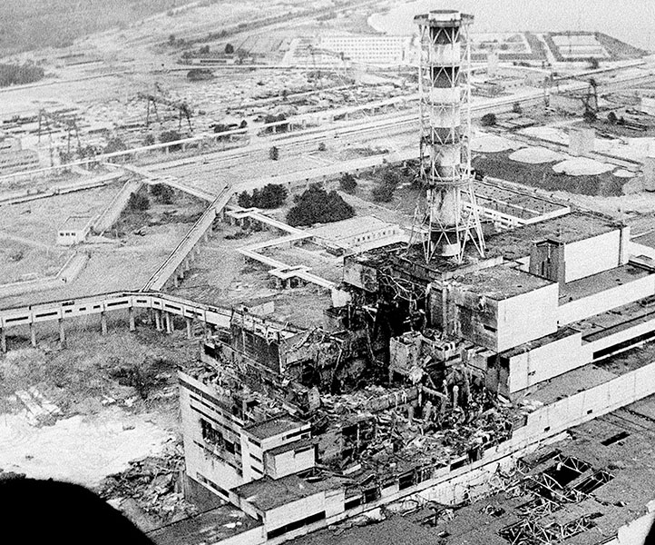
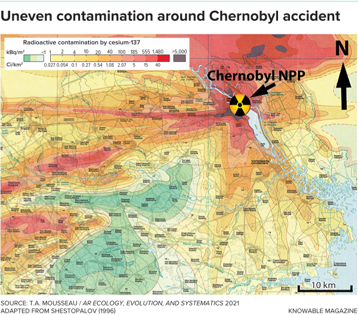
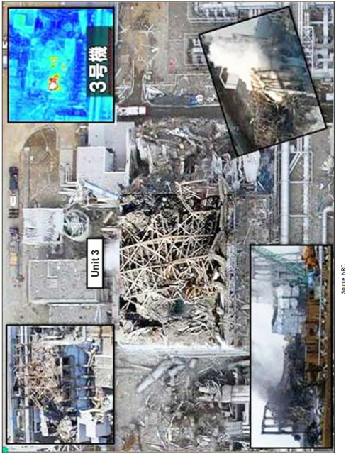
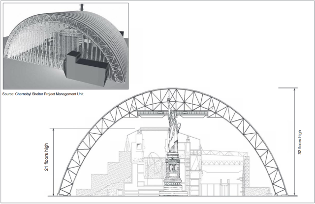

Chernobyl: Revolution, Reaction, Reform
Before the Disaster
Before 1986, nuclear energy was expanding rapidly. Governments believed it was the future of electricity production. Safety regulations varied by country, and international transparency was limited. The Soviet Union’s RBMK reactors were powerful but had known design weaknesses that were not widely disclosed.
Revolution: The Explosion That Changed Nuclear Policy
On April 26, 1986, Reactor 4 at the Chernobyl Nuclear Power Station exploded during a late-night safety test. According to the U.S. Nuclear Regulatory Commission’s 1987 report, the accident resulted from a flawed reactor design combined with operator mistakes ("Report on the Accident at the Chernobyl Nuclear Power Station"). The RBMK reactor used at Chernobyl had a dangerous instability at low power levels that made it vulnerable during testing.

Diagram of the RBMK reactor design. Source: World Nuclear Association, “RBMK Reactors – Appendix to Nuclear Power Reactors.”
This diagram shows the graphite-moderated core and control rod system that contributed to the power surge. The design increased reactivity before reducing it when control rods were inserted. This structural flaw turned a routine safety test into a catastrophic explosion. The revolution in nuclear policy began here: the world realized reactor design itself could create disaster.
Reactor 4 after the explosion, 1986.
The destroyed reactor illustrates the scale of the failure. The explosion released radioactive material across Ukraine and into parts of Europe. As described in “Chernobyl Explosion” (Gale World History Online Collection), the blast shattered international confidence in Soviet nuclear safety and forced governments to reconsider reactor standards worldwide.
Reaction: Political, Environmental, and Social Consequences
The immediate reaction to Chernobyl was secrecy. Soviet authorities delayed public acknowledgment, but radiation alarms in Sweden exposed the disaster internationally. This loss of trust weakened Soviet credibility and contributed to demands for greater transparency.
Map showing spread of radioactive contamination across Europe.
The contamination map demonstrates how radiation did not remain confined to Ukraine. According to “Alps Still Contaminated by Radiation from Chernobyl” (Gale), radioactive fallout reached as far as Western Europe. Even decades later, certain Alpine regions still showed measurable contamination. This geographic spread intensified global fear and sparked environmental activism.
The article “Chernobyl Disaster Spurs Ecological Movements in Eastern Europe” explains how the disaster strengthened environmental movements and political reform efforts. Citizens demanded accountability and safer industrial policies. Economically, cleanup and containment costs reached billions of dollars, straining Soviet resources.
Damage to Unit 3 at Fukushima Daiichi, 2011.
The Fukushima disaster decades later shows how Chernobyl influenced future responses. When Japan experienced a nuclear accident in 2011, international reporting and emergency cooperation occurred far more quickly. As discussed in the GAO article “How Chernobyl Jump-Started the Global Nuclear Safety Regime,” global safety agreements developed directly because of 1986.
Reform: Engineering and International Safety Advances
After the explosion, a temporary concrete sarcophagus was built to contain radiation. However, this structure was never meant to last permanently.

Original concrete shelter built in 1986.
The original shelter reflects an emergency reaction rather than a long-term solution. According to the U.S. Government Accountability Office, structural weaknesses required a more advanced replacement decades later.
Design of the Proposed New Chernobyl Shelter.
The New Safe Confinement structure represents reform. Built with international funding and engineering cooperation, it demonstrates how nuclear safety became a global responsibility. The International Atomic Energy Agency’s “Frequently Asked Questions about Chernobyl” explains how post-1986 agreements strengthened reporting requirements and inspection standards.
Modern reactor designs now include automatic shutdown systems and reinforced containment buildings. The World Nuclear Association’s “Plans for New Reactors Worldwide” shows that despite Chernobyl, nuclear energy continues to expand under stricter safety protocols. The disaster forced innovation rather than ending nuclear power entirely.
Even debates about the relationship between nuclear power and nuclear weapons, discussed by the Campaign for Nuclear Disarmament, gained renewed attention after Chernobyl. Safety, transparency, and international cooperation became central to global nuclear policy.
Visual Evidence
Works Cited
Works Cited "Alps Still Contaminated by Radiation from Chernobyl." Medicine, Health, and Bioethics: Essential Primary Sources, edited by K. Lee Lerner and Brenda Wilmoth Lerner, Gale, 2006, pp. 343-46. Gale in Context: World History, link.gale.com/apps/doc/CX3456500131/WHIC?u=lms_bld&sid=bookmark-WHIC&xid=bfd050f2. Accessed 9 Jan. 2026. Chernobyl Disaster Spurs Ecological Movements in Eastern Europe. 2006. Gale in Context: World History, link.gale.com/apps/doc/CX3456400178/WHIC?u=lms_bld&sid=bookmark-WHIC&xid=cf072a1f. Accessed 9 Jan. 2026. "Chernobyl Explosion." Gale World History Online Collection, Gale, 2023. Gale in Context: World History, link.gale.com/apps/doc/BHUEZV674671603/WHIC?u=lms_bld&sid=bookmark-WHIC&xid=c3772bcd. Accessed 16 Dec. 2025. "Chernobyl Shelter." Chernobyl Shelter, gao.gov, www.gao.gov/assets/gao_blog/inline/2_4.png. Accessed 4 Feb. 2026. Design of the Proposed New Chernobyl Shelter. png. "Frequently asked questions about Chernobyl." iaea.org, www.iaea.org/newscenter/focus/chernobyl/faqs. Accessed 13 Jan. 2026. "How Chernobyl Jump-Started the Global Nuclear Safety Regime." goa.gov, 12 Sept. 2019, www.gao.gov/blog/2019/09/12/how-chernobyl-jump-started-the-global-nuclear-safety-regime. Accessed 13 Jan. 2026. "The links between nuclear power and nuclear weapons." Campaign for Nuclear Disarmament, cnduk.org/resources/links-nuclear-power-nuclear-weapons/. Accessed 13 Jan. 2026. "Plans For New Reactors Worldwide." world-nuclear.org, 9 Jan. 2026, world-nuclear.org/information-library/current-and-future-generation/plans-for-new-reactors-worldwide. Accessed 13 Jan. 2026. "RBMK Reactors – Appendix to Nuclear Power Reactors." world-nuclear.org, 7 Jan. 2026, world-nuclear.org/information-library/appendices/rbmk-reactors. Accessed 13 Jan. 2026. "Report on the Accident at the Chernobyl Nuclear Power Station." nrc.gov, Jan. 1987, www.nrc.gov/docs/ML0716/ML071690245.pdf. Accessed 29 Jan. 2026. "Scientists can't agree about Chernobyl's impact on wildlife." KnowableMagazine, 7 Feb. 2022, knowablemagazine.org/content/article/food-environment/2022/scientists-cant-agree-about-chernobyls-impact-wildlife. Accessed 13 Jan. 2026. Final thesis Chernobyl caused many safety concerns around the world but now with extreme safety advances like making them cleaner, more efficient and safe this should make more power more widely available and people should ultimately feel more safe How chernobyl demonstrated this years theme: chernobyl shows revolutionary reaction and reformation by revolutionizing nuclear reactor, by making people react to the disaster and reforming nuclear safety measures in place